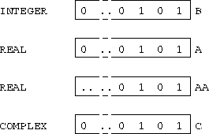

Most languages have a facility to change the type of an area of storage, in FORTRAN 77 people used EQUIVALENCE. Fortran 90 adds a different facility. The TRANSFER intrinsic converts (not coerces) a physical representation between data types; it is a retyping facility. The intrinsic takes the bit pattern of the underlying representation and interprets it as a different type. The intrinsic has the following syntax:
TRANSFER(SOURCE,MOLD)where SOURCE is the object to be retyped and MOLD is an object of the target type. For example,
REAL A(10), AA(10)
INTEGER B(20)
COMPLEX C(5)
...
A = TRANSFER(B, (/ 0.0 /))
AA = TRANSFER(B, 0.0)
C = TRANSFER(B, (/ (0.0,0.0) /))
...
The same bit pattern is used for each variable type:

Figure: Visualisation of the TRANSFER Intrinsic
the variable will take on the number defined by its bit pattern.
The above example highlights the following points: